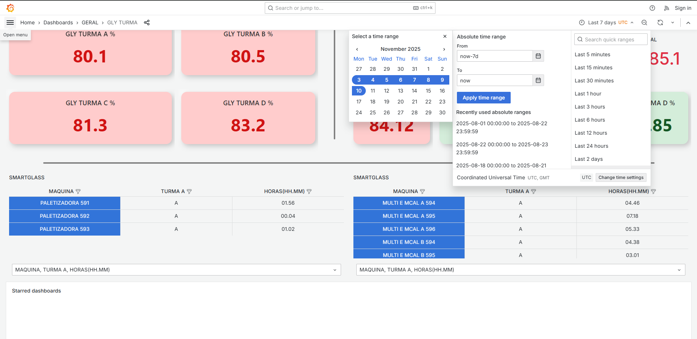
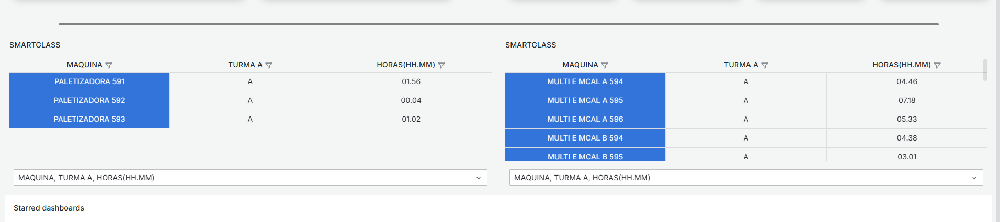

DASHBOARD GLY
Dashboard para monitoramento da produção fabril, com segmentação por turma e VR
, incluindo uma área específica para análise de tempos de parada de máquina, também filtrada por turma.
Tecnologias Utilizadas
Grafana
Docker
SQL Serve
Informações do Projeto
Monitoramento em Tempo Real
Coleta contínua de dados de sensores industriais com processamento via Python e armazenamento em banco SQL.
Containerização com Docker
Infraestrutura containerizada para garantir escalabilidade e facilidade de manutenção.
Visualização com Grafana
Painéis dinâmicos para análise de performance e sistema de alertas integrado.
Segurança e Automação
Solução com segurança reforçada e automação completa dos processos de coleta e análise.
Funcionalidades Principais
- Dashboard para acompanhamento do GLY (produção) por turno
- Análise comparativa entre turmas para identificar melhores práticas
- Filtro por tempo completamente funcional no Grafana
- Integração com smart glass para visibilidade de tempo de parada
- Segmentação de dados por turma para ambas as análises
- Coleta automática de dados diretamente das máquinas
Impacto do Projeto
Este projeto serviu de base para eliminar o lançamento manual de bulks, que passou a ser coletado automaticamente. Trouxe visibilidade das turmas que não performavam bem, permitindo equalizar a performance entre todas as equipes e otimizar a produção como um todo.
Galeria


